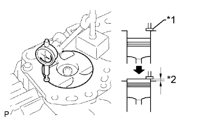
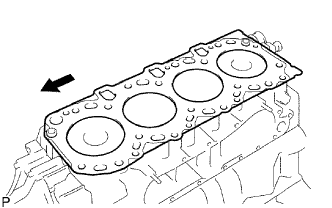
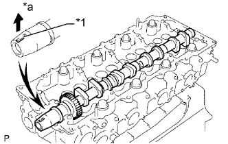
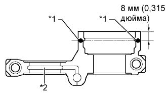
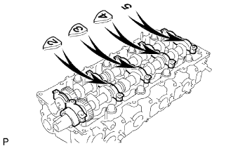
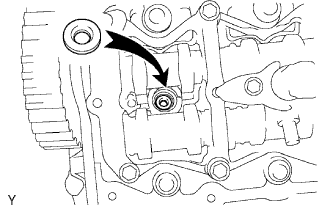
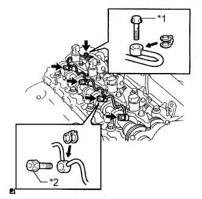
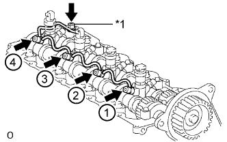
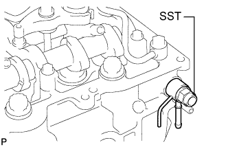

ПРОКЛАДКА ГОЛОВКИ БЛОКА ЦИЛИНДРОВ (для моделей без DPF) > УСТАНОВКА |
| 1. УСТАНОВИТЕ ПРОКЛАДКУ ГОЛОВКИ БЛОКА ЦИЛИНДРОВ |
|  |
Найдите положение наибольшего выступания головки поршня, медленно вращая коленчатый вал по часовой стрелке и против часовой стрелки.
| *1 | Измерительный кончик |
| *2 | Выступы |
 |
Измерьте выступание поршня для каждого цилиндра в 2 точках, как показано на рисунке.
| *1 | Точка измерения |
Для определения величины выступа поршня для каждого цилиндра используйте среднее по 2 измерениям.
 |
Выберите новую прокладку головки блока цилиндров.
| *1 | Метка выреза |
 | Передняя сторона |
| Метка | Заданные условия |
| А | 0,80 - 0,90 мм (0,0315 - 0,0354 дюйма) |
| B | 0,85 - 0,95 мм (0,0335 - 0,0374 дюйма) |
| C | 0,90 - 1,00 мм (0,0354 - 0,0394 дюйма) |
| D | 0,95-1,05 мм (0,0374-0,0413 дюйма) |
| E | 1,00-1,10 мм (0,0394-0,0433 дюйма) |
Выберите самое большое значение выступания поршня из всех результатов измерений. Затем выберите новую прокладку из таблицы ниже.
| Параметр / Устройство | Заданные условия | ||||
| Выступание поршня | 0,005 - 0,054 мм (0,000197 - 0,00213 дюйма) | 0,055 - 0,104 мм (0,00217 - 0,00409 дюйма) | 0,105 - 0,154 мм (0,00413 - 0,00606 дюйма) | 0,155 - 0,204 мм (0,00610 - 0,00803 дюйма) | 0,205 - 0,255 мм (0,00807 - 0,0100 дюйма) |
| Используйте прокладку | А | B | C | D | E |
|  |
Установите прокладку головки блока цилиндров на блок цилиндров.
| Передняя сторона |
| 2. УСТАНОВИТЕ ГОЛОВКУ БЛОКА ЦИЛИНДРОВ В СБОРЕ |
 |
Установите головку блока цилиндров на прокладку головки блока цилиндров.
Нанесите тонкий слой моторного масла на резьбу и под головки болтов головки блока цилиндров.
Установите 18 шайб с 18 болтами головки блока цилиндров и равномерно в несколько приемов затяните болты в последовательности, показанной на рисунке.
 |
Краской отметьте переднюю сторону каждого болта головки блока цилиндров.
| *1 | Метка, нанесенная краской |
| *a | Передняя сторона |
Подтяните болты головки блока цилиндров еще на 90° в последовательности, показанной на рисунке выше.
Затяните болты головок блока цилиндров, повернув их еще на 90°.
Убедитесь, что нанесенные краской метки теперь направлены назад.
| 3. УСТАНОВИТЕ РАСПРЕДВАЛ |
 |
С помощью установочного болта шкива коленчатого вала установите поршень цилиндра № 1 под углом 90° до ВМТ такта сжатия.
| *1 | Шпонка |
|  |
Установите распредвал.
Нанесите на торцевую поверхность распредвала универсальную консистентную смазку.
Установите распредвал в головку блока цилиндров таким образом, чтобы шпоночная канавка была направлена вверх.
| *1 | Шпоночная канавка |
| *a | Вверх |
 |
Совместите установочные метки (в виде 1 точки) на ведущей и ведомой шестернях распредвала и установите распредвал № 2.
Удалите весь старый герметик (FIPG) с крышки подшипника распредвала.
|  |
Нанесите герметик на заданные участки, показанные на рисунке.
| *1 | Герметик |
| *2 | Канал для масла |
|  |
Установите на место 5 крышек подшипников.
 |
Нанесите тонкий слой моторного масла на резьбу и под головки болтов крышек подшипников.
Установите и равномерно затяните в несколько этапов 15 болтов крышек подшипников в последовательности, показанной на рисунке.
 |
Установите новый сальник распредвала.
Нанесите универсальную консистентную смазку на кромку нового сальника.
С помощью SST и молотка запрессуйте сальник так, чтобы его поверхность была заподлицо с поверхностями крышки подшипника распредвала и головки блока цилиндров.
| 4. УСТАНОВИТЕ ИЗОЛЯТОР БЛОКА ЦИЛИНДРОВ |
Установите изолятор блока цилиндров на головку блока цилиндров.
| 5. УСТАНОВИТЕ КРЫШКУ РЕМНЯ ГАЗОРАСПРЕДЕЛЕНИЯ № 2 |
 |
Нанесите герметик (FIPG) на заданные участки, показанные на рисунке.
| *1 | Герметик |
Установите крышку ремня газораспределения № 2 и закрепите ее 4 болтами и гайкой.
| 6. УСТАНОВИТЕ ЗУБЧАТОЕ КОЛЕСО РАСПРЕДВАЛА |
Установите зубчатое колесо распредвала.
Вверните болт зубчатого колеса распредвала, удерживая распредвал ключом.
| 7. УСТАНОВИТЕ ОПОРНЫЙ РОЛИК ПРИВОДНОГО РЕМНЯ ГАЗОРАСПРЕДЕЛЕНИЯ № 1 В СБОРЕ |
С помощью шестигранного гаечного ключа на 10 мм закрепите новую шайбу и опорный ролик приводного ремня газораспределения № 1 болтом.
Проверьте, плавно ли двигается опорный шкив.
Если опорный ролик не перемещается плавно, проверьте установку опорного ролика и шайбы.
| 8. УСТАНОВИТЕ ПРИВОДНОЙ РЕМЕНЬ ГАЗОРАСПРЕДЕЛЕНИЯ |
Установите приводной ремень газораспределения (Нажмите здесь).
| 9. ПРОВЕРЬТЕ ЗАЗОР В ПРИВОДЕ КЛАПАНОВ |
 |
Проверьте только указанные клапаны.
Щупом измерьте зазоры между толкателями клапанов и распредвалом.
| Параметр / Устройство | Заданные условия |
| На впуске | 0,2 - 0,3 мм (0,00787 - 0,0118 дюйма) |
| На выпуске | 0,35 - 0,45 мм (0,0138 - 0,0177 дюйма) |
| *1 | На выпуске |
| *2 | На впуске |
| *a | Передняя сторона |
Проверните коленчатый вал на 360° и установите поршень цилиндра № 4 в ВМТ такта сжатия.
 |
Проверьте только указанные клапаны.
Щупом измерьте зазоры между толкателями клапанов и распредвалом.
| Параметр / Устройство | Заданные условия |
| На впуске | 0,2 - 0,3 мм (0,00787 - 0,0118 дюйма) |
| На выпуске | 0,35 - 0,45 мм (0,0138 - 0,0177 дюйма) |
| *1 | На выпуске |
| *2 | На впуске |
| *a | Передняя сторона |
| 10. ОТРЕГУЛИРУЙТЕ ЗАЗОР В ПРИВОДЕ КЛАПАНОВ |
для моделей с DPF:
Снимите распредвалы (Нажмите здесь).
для моделей без DPF:
Снимите распредвалы (Нажмите здесь).
Извлеките толкатели клапанов.
 |
Микрометром измерьте толщину снятого толкателя клапана.
Вычислите толщину нового толкателя, при которой зазор в приводе клапана будет удовлетворять требованиям.
| А | B | C |
| Толщина нового толкателя | Толщина используемого толкателя | Измеренный зазор в приводе клапанов |
Выберите новый толкатель с ближайшей к рассчитанному значению толщиной.
Установите выбранный толкатель клапана.

| *1 | Таблица для подбора толкателей впускных клапанов | *2 | Толщина установленного толкателя, мм (дюйм) |
| *3 | Измеренный зазор, мм (дюйм.) | - | - |

| *1 | Таблица для подбора толкателей впускных клапанов | *2 | Толщина установленного толкателя, мм (дюйм) |
| *3 | Измеренный зазор, мм (дюйм.) | - | - |
| Номер толкателя | Заданные условия | Номер толкателя | Заданные условия | Номер толкателя | Заданные условия |
| 06 | 5,06 мм (0,1992 дюйма) | 30 | 5,30 мм (0,2087 дюйма) | 54 | 5,54 мм (0,2181 дюйма) |
| 08 | 5,08 мм (0,2000 дюйма) | 32 | 5,32 мм (0,2094 дюйма) | 56 | 5,56 мм (0,2189 дюйма) |
| 10 | 5,10 мм (0,2008 дюйма) | 34 | 5,34 мм (0,2102 дюйма) | 58 | 5,58 мм (0,2197 дюйма) |
| 12 | 5,12 мм (0,2016 дюйма) | 36 | 5,36 мм (0,2110 дюйма) | 60 | 5,60 мм (0,2205 дюйма) |
| 14 | 5,14 мм (0,2024 дюйма) | 38 | 5,38 мм (0,2118 дюйма) | 62 | 5,62 мм (0,2213 дюйма) |
| 16 | 5,16 мм (0,2031 дюйма) | 40 | 5,40 мм (0,2126 дюйма) | 64 | 5,64 мм (0,2220 дюйма) |
| 18 | 5,18 мм (0,2039 дюйма) | 42 | 5,42 мм (0,2134 дюйма) | 66 | 5,66 мм (0,2228 дюйма) |
| 20 | 5,20 мм (0,2047 дюйма) | 44 | 5,44 мм (0,2142 дюйма) | 68 | 5,68 мм (0,2236 дюйма) |
| 22 | 5,22 мм (0,2055 дюйма) | 46 | 5,46 мм (0,2150 дюйма) | 70 | 5,70 мм (0,2244 дюйма) |
| 24 | 5,24 мм (0,2063 дюйма) | 48 | 5,48 мм (0,2157 дюйма) | 72 | 5,72 мм (0,2252 дюйма) |
| 26 | 5,26 мм (0,2071 дюйма) | 50 | 5,50 мм (0,2165 дюйма) | 74 | 5,74 мм (0,2260 дюйма) |
| 28 | 5,28 мм (0,2079 дюйма) | 52 | 5,52 мм (0,2173 дюйма) | - | - |

| *1 | Таблица для выбора толкателей выпускных клапанов | *2 | Толщина установленного толкателя, мм (дюйм) |
| *3 | Измеренный зазор, мм (дюйм.) | - | - |

| *1 | Таблица для выбора толкателей выпускных клапанов | *2 | Толщина установленного толкателя, мм (дюйм) |
| *3 | Измеренный зазор, мм (дюйм.) | - | - |
| Номер толкателя | Заданные условия | Номер толкателя | Заданные условия | Номер толкателя | Заданные условия |
| 06 | 5,06 мм (0,1992 дюйма) | 30 | 5,30 мм (0,2087 дюйма) | 54 | 5,54 мм (0,2181 дюйма) |
| 08 | 5,08 мм (0,2000 дюйма) | 32 | 5,32 мм (0,2094 дюйма) | 56 | 5,56 мм (0,2189 дюйма) |
| 10 | 5,10 мм (0,2008 дюйма) | 34 | 5,34 мм (0,2102 дюйма) | 58 | 5,58 мм (0,2197 дюйма) |
| 12 | 5,12 мм (0,2016 дюйма) | 36 | 5,36 мм (0,2110 дюйма) | 60 | 5,60 мм (0,2205 дюйма) |
| 14 | 5,14 мм (0,2024 дюйма) | 38 | 5,38 мм (0,2118 дюйма) | 62 | 5,62 мм (0,2213 дюйма) |
| 16 | 5,16 мм (0,2031 дюйма) | 40 | 5,40 мм (0,2126 дюйма) | 64 | 5,64 мм (0,2220 дюйма) |
| 18 | 5,18 мм (0,2039 дюйма) | 42 | 5,42 мм (0,2134 дюйма) | 66 | 5,66 мм (0,2228 дюйма) |
| 20 | 5,20 мм (0,2047 дюйма) | 44 | 5,44 мм (0,2142 дюйма) | 68 | 5,68 мм (0,2236 дюйма) |
| 22 | 5,22 мм (0,2055 дюйма) | 46 | 5,46 мм (0,2150 дюйма) | 70 | 5,70 мм (0,2244 дюйма) |
| 24 | 5,24 мм (0,2063 дюйма) | 48 | 5,48 мм (0,2157 дюйма) | 72 | 5,72 мм (0,2252 дюйма) |
| 26 | 5,26 мм (0,2071 дюйма) | 50 | 5,50 мм (0,2165 дюйма) | 74 | 5,74 мм (0,2260 дюйма) |
| 28 | 5,28 мм (0,2079 дюйма) | 52 | 5,52 мм (0,2173 дюйма) | - | - |
для моделей с DPF:
Установите распредвалы (Нажмите здесь).
для моделей без DPF:
Установите распредвалы (Нажмите здесь).
| 11. УСТАНОВИТЕ ФОРСУНКУ В СБОРЕ |
|  |
Установите 4 новых седла форсунок в головку блока цилиндров.
Нанесите тонкий слой чистого моторного масла на 4 новых кольцевых уплотнения.
 |
Установите кольцевое уплотнение на каждую форсунку, как показано на рисунке.
| *1 | Новое кольцевое уплотнение |
Установите 4 форсунки в головку блока цилиндров.
При замене форсунки новой деталью зарегистрируйте компенсационный код форсунки (Нажмите здесь).
 |
Временно закрепите 4 новых шайбы и 4 фиксатора корпуса форсунок № 1 4 болтами.
| *1 | Шайба |
| *a | Вниз |

| *1 | Фиксатор корпуса форсунки |
Временно закрепите 4 топливных трубки высокого давления гайками штуцеров.
 |
Проверьте трубопровод обратного слива топлива. Убедитесь, что на уплотнительных поверхностях 5 штуцеров нет царапин и вмятин.
Если присутствуют царапины или вмятины, замените трубопровод обратного слива топлива.
|  |
Установите на место трубку обратного слива и 5 новых прокладок.
| *1 | Пустотелый соединительный болт-штуцер |
| *2 | Полый винт |
Нанесите тонкий слой масла на 4 полых винта форсунок и пустотелый соединительный болт-штуцер.
Временно закрепите трубку обратного слива с помощью 4 полых винтов форсунок и пустотелого соединительного болта-штуцера.
Затяните 4 болта фиксаторов корпуса.
|  |
Затяните 4 полых винта в порядке с 1 по 4.
| *1 | Пустотелый соединительный болт-штуцер |
Затяните пустотелый соединительный болт-штуцер.
Снимите 4 топливные трубки высокого давления.
| 12. ПРОВЕРЬТЕ, НЕТ ЛИ УТЕЧЕК ТОПЛИВА |
|  |
Убедитесь в отсутствии утечек из соединения трубопровода обратного слива топлива.
Установите прокладку и трубопровод обратного слива топлива № 2 на головку блока цилиндров с помощью SST (обратный клапан).
Нанесите немного мыльного раствора (или другой жидкости для обнаружения утечек топлива) на соединение трубопровода обратного слива топлива.
 |
Установите SST (манометр для измерения давления наддува) со стороны возврата топлива трубки обратного слива и поддерживайте давление 100 кПа (1,0 кгс/см2, 15 фунтов на кв. дюйм) в течение 60 с, чтобы проверить, появляются ли пузырьки.
После проверки герметичности топливной системы вытрите мыльный раствор с соединения трубки обратного слива.
Снимите SST, трубопровод обратного слива топлива № 2 и прокладку.
| 13. УСТАНОВИТЕ КРЫШКУ ГОЛОВКИ БЛОКА ЦИЛИНДРОВ В СБОРЕ |
Удалите весь старый герметик (FIPG) с головки блока цилиндров.
Нанесите герметик в местах, показанных на рисунке.
| *1 | Герметик |
Закрепите новую прокладку и крышку головки блока цилиндров 10 болтами и 2 гайками.
| 14. УСТАНОВИТЕ УПЛОТНИТЕЛЬНОЕ КОЛЬЦО ФОРСУНКИ В ГОЛОВКЕ БЛОКА ЦИЛИНДРОВ |
Установите 4 новых уплотнительных кольца форсунок в головке блока цилиндров.
| 15. УСТАНОВИТЕ ВАКУУМНУЮ ТРУБКУ № 3 В СБОРЕ |
Закрепите вакуумную трубку № 3 с помощью болта.
Подсоедините вакуумный шланг.
| 16. УСТАНОВИТЕ КРЫШКУ ГОЛОВКИ БЛОКА ЦИЛИНДРОВ № 2 В СБОРЕ |
 |
Закрепите крышку головки блока цилиндров № 2 4 болтами.
| 17. УСТАНОВИТЕ ТОПЛИВНУЮ СИСТЕМУ COMMON RAIL В СБОРЕ |
Закрепите топливную систему Common Rail и изолятор впускного коллектора № 2 2 болтами.
Подсоедините разъемы датчика давления в топливной системе и разъем клапана сброса давления.
| 18. УСТАНОВИТЕ ИЗОЛЯТОР ВПУСКНОГО КОЛЛЕКТОРА № 2 |
Установите изолятор впускного коллектора № 2
| 19. УСТАНОВИТЕ ТРУБКУ ПОДВОДА ТОПЛИВА |
Установите трубку подвода топлива и временно закрепите ее гайками штуцеров.
 |
С помощью разрезной головки на 17 мм затяните гайку штуцера трубки подвода топлива со стороны топливной системы Common Rail.
| *a | Сторона топливной системы Common Rail |
| *b | Сторона нагнетающего топливного насоса |
С помощью разрезной головки на 17 мм затяните гайку штуцера трубки подвода топлива со стороны нагнетающего топливного насоса.
Установите зажим и закрепите его болтом.
| *1 | Трубопровод обратного слива топлива № 2 |
| *2 | Трубка подвода топлива |
| *3 | Золотник |
| 20. УСТАНОВИТЕ СВЕЧУ НАКАЛИВАНИЯ В СБОРЕ |
Установите свечи накаливания (Нажмите здесь).
| 21. УСТАНОВИТЕ ВПУСКНОЙ КОЛЛЕКТОР |
Установите впускной коллектор (Нажмите здесь).
| 22. УСТАНОВИТЕ ВЫПУСКНОЙ КОЛЛЕКТОР С ТУРБОНАГНЕТАТЕЛЕМ |
Установите выпускной коллектор с турбонагнетателем (Нажмите здесь).
| 23. ЗАЛЕЙТЕ МОТОРНОЕ МАСЛО |
Залейте новое моторное масло.
| Параметр / Устройство | Класс масла | Вязкость масла (SAE) |
| Для моделей с DPF | ACEA C2 (использование моторного масла, отличного от ACEA C2, может привести к повреждению каталитического нейтрализатора) | - 0W-30 - 5W-30 (0W-30 – наилучшее масло с точки зрения экономии топлива и облегчения запуска двигателя в холодную погоду) |
| Для моделей без DPF | G-DLD1, API CF-4, CF или ACEA B1 (также можно использовать API CE или CD) | - 5W-30 - 10W-30 - 15W-40 - 20W-50 |
| Параметр / Устройство | Заданные условия |
| Слив и заполнение без замены масляного фильтра | 6,7 л (7,1 кварты США, 5,9 английской кварты) |
| Слив и заполнение с заменой масляного фильтра | 7,0 л (7,4 кварты США, 6,2 английской кварты) |
| Заполнение сухой системы | 7,5 л (7,9 кварты США, 6,6 английской кварты) |
Установите крышку маслоналивной горловины.
| 24. ПОДСОЕДИНИТЕ ПРОВОД К ОТРИЦАТЕЛЬНОМУ ВЫВОДУ АККУМУЛЯТОРНОЙ БАТАРЕИ |
| 25. УДАЛИТЕ ВОЗДУХ ИЗ ТОПЛИВНОЙ СИСТЕМЫ |
 |
С помощью ручного насоса, установленного на крышке топливного фильтра, удалите воздух из топливной системы. Продолжайте прокачку, пока сопротивление насоса при работе не возрастет.
Запустите двигатель.
Если двигатель запускается, перейдите к следующему шагу.
Если запуск двигателя невозможен, прокачайте систему снова с помощью ручного насоса до повышения сопротивления насоса (см. процедуры выше). Затем запустите двигатель.
Выключите зажигание.
Подсоедините портативный диагностический прибор к DLC3.
Включите зажигание (IG) и портативный диагностический прибор.
Сбросьте коды DTC (Нажмите здесь).
Запустите двигатель.*1
 |
Войдите в следующие меню: Powertrain / Engine and ECT / Active Test / Test the Fuel Leak.*2
| *a | Для справки Испытание в режиме Active Test |
Выполните следующее испытание 5 раз с интервалами включения/выключения 10 с: Active Test / Test the Fuel Leak.*3
После 5-го испытания в режиме Active Test дайте двигателю поработать на холостом ходу в течение не менее 3 мин.

Войдите в следующие меню: Powertrain / Engine and ECT / DTC.
Считайте текущие коды DTC.
Сбросьте коды DTC (Нажмите здесь).
Повторите операции с *1 по *3.
Войдите в следующие меню: Powertrain / Engine and ECT / DTC.
Считайте текущие коды DTC.
| 26. ДОБАВЬТЕ ОХЛАЖДАЮЩУЮ ЖИДКОСТЬ ДВИГАТЕЛЯ |
Затяните пробку сливного крана радиатора вручную.
Затяните пробку сливного крана блока цилиндров.
Заполните радиатор охлаждающей жидкостью с увеличенным сроком замены "Super Long Life Coolant (SLLC)" от компании Тойота, залив ее в трубопровод B расширительного бачка.
| Параметр / Устройство | Заданные условия | |
| для моделей с автоматической трансмиссией | Для моделей с задним подогревателем | 14,9 литра (15,7 кварты США, 13,1 английской кварты) |
| Для моделей без заднего подогревателя | 13,1 литра (13,8 кварты США, 11,5 английской кварты) | |
| для моделей с механической трансмиссией | Для моделей с задним подогревателем | 15,0 литра (15,8 кварты США, 13,2 английской кварты) |
| Для моделей без заднего подогревателя | 13,2 литра (13,9 кварты США, 11,6 английской кварты) | |
Несколько раз сожмите рукой входной и выходной патрубки радиатора, затем проверьте уровень охлаждающей жидкости.
Если уровень охлаждающей жидкости опускается ниже линии В, долейте охлаждающую жидкость SLLC Toyota до линии В.
Установите пробку расширительного бачка радиатора.
Установите вентиляционную пробку с помощью гаечного ключа.
Выпустите воздух из системы охлаждения.
Прогревайте двигатель, пока не откроется термостат. Когда термостат откроется, несколько минут прокачивайте охлаждающую жидкость.
Поддерживайте частоту вращения коленчатого вала двигателя на уровне 2500–3000 об/мин.
Несколько раз сожмите рукой входной и выходной патрубки радиатора, чтобы удалить воздух.
Остановите двигатель и подождите, пока охлаждающая жидкость остынет до температуры окружающего воздуха.
Когда охлаждающая жидкость остынет, убедитесь, что она находится на уровне отметки FULL.
Если уровень охлаждающей жидкости ниже отметки FULL, долейте SLLC от компании Тойота до этой отметки.
| 27. ПРОВЕРЬТЕ, НЕТ ЛИ УТЕЧЕК ОХЛАЖДАЮЩЕЙ ЖИДКОСТИ |
Заполните радиатор охлаждающей жидкостью и подсоедините приспособление для опрессовки системы охлаждения и проверки пробки радиатора.
Прогрейте двигатель.
С помощью приспособления для опрессовки системы охлаждения и проверки пробки радиатора увеличьте давление в радиаторе до 123 кПа (1,3 кгс/см2, 18 фунтов на кв. дюйм) и убедитесь, что давление не падает.
Если давление снижается, проверьте на наличие утечек шланги, радиатор и насос системы охлаждения. При отсутствии внешних утечек проверьте сердцевину нагревателя, блок цилиндров и головку.
| 28. ПРОВЕРЬТЕ, НЕТ ЛИ УТЕЧЕК МАСЛА |
Запустите двигатель. Убедитесь, что в узлах, в которых выполнялись работы, нет утечек масла.
| 29. ПРОВЕРЬТЕ, НЕТ ЛИ УТЕЧЕК ТОПЛИВА |
Убедитесь, что когда двигатель остановлен, нет утечки из какой-либо части топливной системы. При обнаружении утечки топлива отремонтируйте или замените детали, если это необходимо.
Запустите двигатель и убедитесь, что в топливной системе нет утечек. При обнаружении утечки топлива отремонтируйте или замените детали, если это необходимо.
Отсоедините возвратный шланг от топливной системы Common Rail.
Запустите двигатель и проверьте возвратный трубопровод на наличие утечек топлива.
В случае наличия утечек топлива замените топливную систему Common Rail.
Подсоедините портативный диагностический прибор к DLC3.
Запустите двигатель и включите портативный диагностический прибор.
В режиме Active Test портативного диагностического прибора выберите Fuel Leak Test.
Если портативный диагностический прибор недоступен, быстро до упора нажмите педаль акселератора. Увеличьте частоту вращения коленчатого вала двигателя до максимума и поддерживайте ее в течение 2 с. Повторите эту операцию несколько раз.
Убедитесь в отсутствии утечек топлива из топливной системы.
Подсоедините возвратный шланг к топливной системе Common Rail.
| 30. ПРОВЕРЬТЕ УРОВЕНЬ МОТОРНОГО МАСЛА |
Прогрейте двигатель, затем остановите его и подождите 5 минут. Уровень моторного масла должен находиться между отметками низкого и максимального уровней на щупе проверки уровня масла.
Если уровень низкий, проверьте, нет ли утечек, и долейте масло до максимальной отметки.
| 31. УСТАНОВИТЕ ЗАЩИТУ КАРТЕРА ДВИГАТЕЛЯ № 1 В СБОРЕ |
Установите защиту картера двигателя № 1 и закрепите ее 4 болтами.
| 32. УСТАНОВИТЕ НИЖНЮЮ ОБЛИЦОВКУ ПЕРЕДНЕГО БАМПЕРА |
Установите нижнюю накладку переднего бампера и закрепите ее фиксатором и 5 болтами.